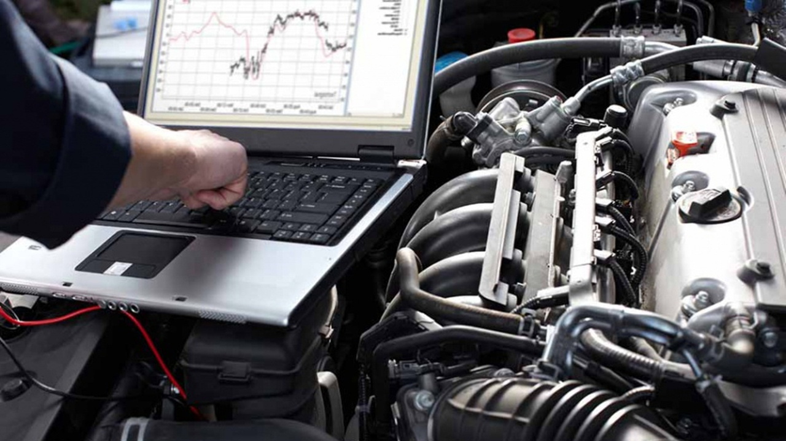

Reprogramación ECU Stage 2
Aumento de rendimiento con pruebas en banco.

Descripción: Reprogramación ECU (Stage 2). Ajustes avanzados en centralita, optimización de par y potencia. Incluye test en banco y garantía del software.
Reseña destacada
Javier Martínez
Hace 1 mes"La potencia se nota muchísimo. Mi Golf ahora va como nuevo. El equipo es muy profesional y saben lo que hacen. 100% recomendado para tuning."